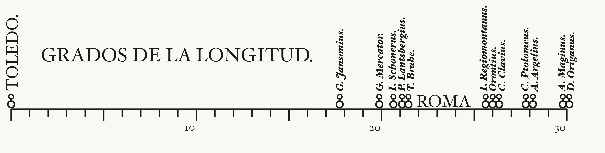

Show the R code
ink <- p$ink
# The original is set in an old-style serif. Use the closest one installed.
serif <- c(intersect(c("Hoefler Text", "Baskerville", "Georgia"),
systemfonts::system_fonts()$family), "serif")[1]
# Names on neighbouring marks would print on top of each other, so nudge them
# apart until no two are closer than `gap` degrees, keeping each crowded run
# centred on the marks it labels. The engraver did the same by hand.
spread_out <- function(x, gap) {
o <- order(x); y <- x[o]
repeat {
moved <- FALSE
runs <- cumsum(c(TRUE, diff(y) >= gap - 1e-9))
for (r in unique(runs)) {
i <- which(runs == r)
if (length(i) < 2) next
want <- mean(x[o][i]) + (seq_along(i) - (length(i) + 1) / 2) * gap
if (any(abs(want - y[i]) > 1e-9)) { y[i] <- want; moved <- TRUE }
}
if (!moved) break
}
replace(x, o, y)
}
ticks <- tibble(x = 0:30, len = if_else(x %% 5 == 0, .11, .07))
marks <- tibble(x = c(0, langren$Longitude)) # Toledo gets a mark too
labels <- langren |> mutate(at = spread_out(Longitude, .5))
recreation <- ggplot() +
annotate("segment", x = 0, xend = 30, y = 0, yend = 0, colour = ink, linewidth = 1.1) +
geom_segment(data = ticks, aes(x = x, xend = x, y = 0, yend = -len),
colour = ink, linewidth = .9) +
annotate("text", x = c(10, 20, 30) - .35, y = -.16, label = c(10, 20, 30),
family = serif, size = 5.4, colour = ink) +
# each mark is a ring on the scale with a smaller ring on top, as engraved
geom_point(data = marks, aes(x, .045), shape = 1, size = 3.4, stroke = 1.5, colour = ink) +
geom_point(data = marks, aes(x, .115), shape = 1, size = 2.2, stroke = 1.3, colour = ink) +
geom_text(data = labels, aes(at, .165, label = paste0(Name, ".")),
angle = 90, hjust = 0, family = serif, fontface = "bold.italic",
size = 5, colour = ink) +
annotate("text", x = .05, y = .17, label = "TOLEDO.", angle = 90, hjust = 0,
family = serif, size = 8.2, colour = ink) +
annotate("text", x = 23.35, y = .075, label = "ROMA", family = serif,
size = 8.4, colour = ink) +
annotate("text", x = 1.6, y = .5, label = "GRADOS DE LA LONGITUD.", hjust = 0,
family = serif, size = 9.6, colour = ink) +
# The limits put 0 and 30 where the engraving has them, measured off the scan
coord_cartesian(xlim = c(-.6, 32.06), ylim = c(-.4, 1), expand = FALSE) +
theme_void() +
theme(plot.background = element_rect(fill = p$paper, colour = NA))
recreation